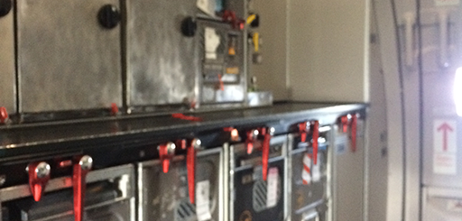

Wer ich bin und wieviele
Hier steht ein Text über mich, und da niemand lange Texte liest, fasse ich mich kurz. Die Aufmerksamkeitsspanne eines Goldfisches beträgt 9 Sekunden, hat mal ein Dozent gesagt. Danach habe ich ihm nicht mehr zugehört.
Meine Ausbildung zur Mediengestalterin und ein UX Design-Studium (B.A.) bilden die Basis, um Konzepte und Ideen umzusetzen.
Ich war Bildbearbeiterin bei Mundocom / Publicis Frankfurt, ein paar Jahre Junior Art Director bei Cheil Germany, als Freelance Art Director & Lufthansa Flugbegleiterin unterwegs und seitdem UX Designerin und Art Director bei rabbit eMarketing Frankfurt.Expertise
Design & Strategie, Corporate Identity, Kampagnenentwicklung, Online Marketing, Designkonzeption, Art Direction
Brand Expertise


Tools
Figma, Adobe Creative Cloud, Pen & Paper, Miro, Trello. Mit Excel und PowerPoint kann man mich jagen. Brain is braining 24/7
Was ich sonst noch mag


